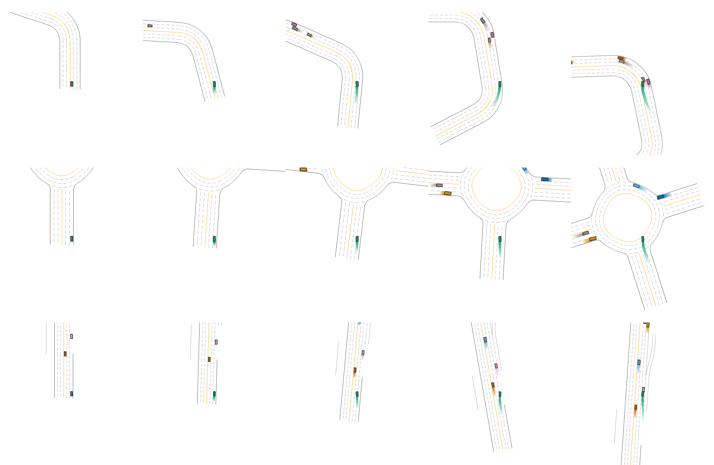

Teacher Quality, Memory Mechanism, and Architecture Choice
Mayan Wasu · Class of 2027|Advisor: Prof. Hossein Valavi|mayanwasu@princeton.edu
5×
Architectures
8×
Teacher Levels
16.3×
Edge Speedup
Read paper & code
TL;DR
Across 500+ distillation experiments, teacher quality explains 49–72% of student return variance —
4–16× more than student architecture. But architecture matters more when teachers are bad (17–25% interaction).
Pick a good teacher first; then match architecture to task:
GRU for locomotion, Transformer for content-addressable recall, and
STU / Transformer for spatially-structured driving (where GRU drops to mid-pack).
Architectures
GRUlocomotion
LSTMretention
Transformerrecall
STUspatial · LDS
STU-Ttensordot variant
MLPno memory
Same colors used in every chart →
Motivation & Setup
01
§1.1
The Problem
Deploying RL agents on robots and drones requires compressing
large “teacher” policies into tiny “student” models via
behavioral cloning. The student only sees partial observations — joint positions,
no velocities — and must infer missing state from history. Memory is no longer optional.
Research Question
Should you invest your engineering effort in a smarter student architecture —
or in a better teacher?
§1.2
Distillation Pipeline
Figure 1. Three-phase pipeline. A fully-observable RecurrentPPO teacher rolls out 500 demonstration episodes; velocities are stripped before behavioral cloning so the student must close the observability gap with memory.
§1.3
Architectures
Architecture
Params
Latency
Memory mechanism
GRU
51 K
1.26 ms
Learned gating
LSTM
68 K
1.33 ms
Gating + cell state
Transformer
232 K
3.36 ms
Attention lookup
STU (Spectral)
338 K
4.38 ms
Fixed Hankel filters
MLP (no memory)
5 K
0.10 ms
None
All recurrent students sized to d_model = 64, 2 layers — a compact, edge-feasible regime.
How each architecture remembers · cartoon view
Figure 2. Each architecture maintains memory differently. GRU/LSTM compress history into a fixed hidden state; Transformer attends to the entire past at every step; STU convolves with fixed spectral filters and projects.
§1.3b
Briefly · What is PPO?
PPO (Proximal Policy Optimization) trains the teacher: roll out πθ, then update toward high-advantage actions while clipping so the new policy can't drift too far. RecurrentPPO adds a GRU/LSTM so the teacher itself can solve POMDPs — yielding strong, history-aware demos for the student to imitate.
Autonomous driving with 72-laser lidar (91-dim); rich spatial observations.
CT-Maze
Synthetic retention — hold a 1-bit hint over L ∈ {10,50,100,200} steps.
DCopyTask
Synthetic recall — replay N ∈ {5,10,20} tokens after a delay.
Demos
500
episodes / cond.
Seeds
3 – 5
student seeds
Teacher levels
8
200K → 2M ± noise
d_model
64
edge-feasible
§1.6
Contributions
Variance decomposition across 500+ runs: teacher η² ≈ 50–72% vs architecture η² ≈ 5–14%.
Memory taxonomy separating retention, recall, and state inference — each with a different architectural winner.
Flash-STU tensordot regression at d=64: 52× worse MSE than full STU; effectively random on every distillation task. Unreported in prior work.
JEPA null result across 4 archs × 3 envs and a 6-value λ sweep on LDS.
SpectraLDS deployment path: 16.3× edge speedup over full STU at 0.04% reconstruction error.
§1.7
How It Works · Three-Phase Pipeline
Phase 1 — Train a powerful teacher. We train a large RecurrentPPO agent with full access to the environment (positions + velocities). It learns through millions of timesteps of trial and error. This teacher is too big for real-time deployment, but it knows how to act.
Phase 2 — Record and compress. We record 500 episodes of the teacher acting. Crucially, we strip the velocity channels — the student only sees joint positions. The student trains via behavioral cloning: minimize the squared error between its actions and the teacher's at every timestep.
LBC(θ) = Σepisodes Σt=1..T ‖ πθ(o1:t) − a*t ‖²
Longer episodes contribute more gradient signal. Successful (longer) episodes are implicitly upweighted — the student learns more from the teacher's best behavior.
Phase 3 — Deploy at the edge. The tiny student (51K–338K params) runs in real-time. It sees only positions and must infer velocities from past observations — this is why temporal memory matters.
Key insight: Distillation is supervised learning, not RL. The teacher already explored; the student just fits a function. This is why teacher quality matters more than architecture.
Acknowledgements. I thank Prof. Hossein Valavi for his guidance throughout this project, and the Princeton Research Computing group for access to the Della and Adroit clusters.
Central Finding · Teacher Dominates
02
The headline finding 49–72% of variance in student return is explained by teacher quality — 4–16× more than architecture choice (η² ≈ 5–14%). Pick the teacher first.
Teacher η² (variance explained)
61%
pooled across MuJoCo + MetaDrive
Architecture η²
9%
GRU vs LSTM vs Transformer vs STU
§2.1
Students Track Teachers
Student return vs. teacher return — MuJoCo POMDPs
GRULSTMSTUTransformery = x perfect distillation
Figure 3. Each marker is one (architecture, teacher) condition averaged over 3 seeds. Horizontal spread (teacher) ≫ vertical spread (architecture). Architecture choice rotates the cluster but never crosses lanes.
The teacher is the signal; the architecture is just the antenna.
§2.2
Variance Decomposition (ANOVA, η²)
Environment
Teacher
Architecture
Interaction
HalfCheetah
71.9%
4.6%
17.3%
Ant
49.1%
11.0%
25.2%
MetaDrive
58.3%
14.1%
19.7%
Teacher η² is 4–16× larger than architecture η². The interaction term (17–25%) tells us when architecture matters — it grows precisely when teachers are weak.
§2.3
Teacher Quality Sweep · Real Numbers
Ant-POMDP · 8 teacher conditions × 4 students (3 seeds)
Teacher (steps · noise)
Teach.
GRU
LSTM
STU
Transf.
200K · clean
647
894
847
861
879
200K · σ=0.3
216
961
952
883
961
500K · clean
963
1112
1121
1050
1068
500K · σ=0.3
251
1079
1161
1083
1090
1M · clean
1424
1745
1692
1356
1657
1M · σ=0.3
317
1145
945
1134
962
2M · clean
439
1783
1238
496
858
2M · σ=0.3
210
1921
1944
1359
1091
Table 1. GRU consistently leads or co-leads. Students routinely exceed imperfect teachers because BC averages over a high-variance demo set with rare strong rollouts.
§2.4
Why Students Exceed Teachers
The Ant 2M teacher scores 439; demos range 17 → 1928 (σ=368, ~15% of demos > 800). BC's per-step MSE implicitly upweights longer, more successful episodes — the student inherits a return-biased distribution and generalizes beyond it.
1.23×
median student / teacher ratio with stable teachers; ratio grows with teacher variance.
§2.5
Cross-Environment Mean Return
Overall mean return across MuJoCo POMDPs (all teachers, 3 seeds)
Figure 4. Pooled across all teacher levels and MuJoCo envs. The recurrent-vs-spectral gap is small (1,222 vs 1,001); the memory-vs-no-memory gap is the order of magnitude (1,222 vs 115).
§2.6
Parameter-Matched Comparison
Is GRU's lead just a parameter advantage? No. We re-ran GRU at 312K params (matched to STU's 338K) on Ant.
Model
Params
Ant mean
Best run
GRU (compact)
51 K
1,222
1,921
GRU (matched)
312 K
1,422
2,354
STU (full)
338 K
1,001
1,657
GRU's advantage is genuinely architectural — and scales with capacity. The matched-param GRU set the highest return in the entire study (2,354 on Ant).
When Architecture Matters
03
§3.1
Memory Mechanism Taxonomy
Figure 5. Each architecture wins a different memory operation. There is no universal best.
§3.2
Synthetic Probes · Hard Numbers
T-Maze · success rate (1.0 = perfect, 3 seeds)
L (gap)
GRU
LSTM
Transf.
STU-T
10
1.00
1.00
1.00
0.05
50
1.00
1.00
1.00
0.05
100
1.00
1.00
1.00
0.05
200
1.00
1.00
0.05
0.05
Figure 6. GRU/LSTM hold the hint perfectly across all gaps; Transformer collapses at L=200 as the corridor exceeds its window. STU-T fails everywhere — random.
CopyTask · score vs N (max = N, optimal teacher)
TransformerGRULSTMSTU-Tperfect = N
Figure 7. As N grows, attention pulls away. Transformer 18.84/20 at N=20 — content-addressable lookup is the right primitive for recall.
§3.3
Data Efficiency · CopyTask N=10
Score vs demo budget (3 seeds)
Budget
GRU
LSTM
Transf.
STU-T
5
1.41
1.41
1.31
1.10
50
2.21
2.32
2.54
1.07
250
5.30
4.83
6.87
1.19
1000
9.00
7.85
9.00
1.16
Figure 8. Even 5 demos get GRU/LSTM to ≈30% of perfect on a recall task. Transformer overtakes once budget ≥ 50.
§3.4
LDS Replication · Spectral Models
MSE vs spectral radius (16 seeds, lower is better)
STU (full)GRULSTMTransformerSTU-T
Figure 9.UNREPORTED Flash-STU's tensordot variant is 52× worse than published at d=64. Full STU is 12× better than GRU.
Practical contraindication: below d_model = 128, the “efficient” tensordot variant is essentially random on every distillation task — surfaced here for the first time.
§3.5
Architecture × Task Winner Matrix
Per-task best architecture (green = top-1, amber = within 5%)
Figure 10. No architecture wins everywhere. GRU dominates locomotion + retention; STU dominates spatial driving + LDS; Transformer dominates recall. The right tool depends on the memory operation, not the field.
Driving · Deployment · Recommendations
04
§4.1
MetaDrive · Spatial Story Flips
On MetaDrive — autonomous driving with 72-laser lidar (91-dim) — the locomotion ranking flips. Recurrent students struggle through complex intersections; STU and Transformer exploit spatial geometry directly.
Mean episode reward (points / episode) · MetaDrive (5 seeds)
Figure 11. STU (75.4) and Transformer (73.7) lead on lidar-rich MetaDrive; GRU (68.7) drops to mid-pack — observation structure changes the right tool.
Rollout traces · 6 architectures × 5 scenarios
Straight
T-junction
4-way
Ramp
Roundabout
LSTM
STU
Transf.

Figure 12. Three key architectures across five road types. STU and Transformer negotiate branches and roundabouts; LSTM hesitates at complex geometry.
Figure 13. Best-of-sweep students. GRU develops stable gaits on both bodies; worst students (Transformer on HalfCheetah, STU on Ant) stall or fall — see paper appendix.
§4.3
JEPA Auxiliary Loss · Null
We tested a JEPA predictive auxiliary loss (predict teacher's future hidden state) across all architectures, environments, and a 6-value λ sweep. No consistent benefit found. MSE = 0.1053 at every λ; MuJoCo Δ ranges −4.5% to +5.7%. Skip JEPA for policy distillation.
§4.4
Edge Deployment
Inference latency — milliseconds per environment step (lower = better)
Figure 14. Convert a trained full-STU student to SpectraLDS at deploy time: 16.3× speedup with 0.04% reconstruction error. Recurrent students remain Pareto-optimal at the small end; spectral wins after conversion.
Practical Recommendations
What to do
Invest in teacher quality first. 4–16× more impact than the architecture choice.
GRU for locomotion & control. 51K · 1.26 ms — Pareto-optimal in our sweep.
Transformer for content recall. If the task is "remember which," use attention.
STU / Transformer for spatial inputs — lidar, radar, occupancy grids.
Use full STU below d_model = 128. The "efficient" tensordot path is silently random.
Skip JEPA auxiliary losses. No consistent benefit found.
Convert to SpectraLDS at deploy. 16.3× speedup for spectral students.
§4.6
Limitations · Future Work
LIMITATIONS
Single MuJoCo teacher seed (42).
3 student seeds (5 on key conditions).
Compact only — d_model=64.
Param-matched: GRU₁₆₀ (312K) outperforms STU (338K).
Offline BC; DAgger untested.
SpectraLDS not tested end-to-end on a distilled student.